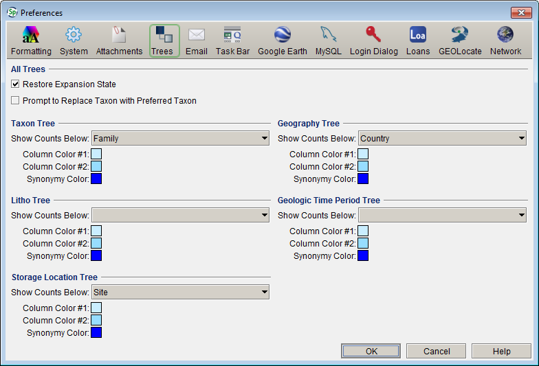

|
Tree Preferences |
This preference window is used to customize the appropriate hierarchical Trees, (Storage, Taxon, Geography, Chronostratigraphy and Lithostratigraphy), in Specify 6.
- For Mac: Choose Specify > Preferences > Trees.
- For Windows and Linux: Choose Edit > Preferences > Trees.

Trees Preference
This page is used to customize the appropriate hierarchical Trees, (Storage, Taxon, Geography, Chronostratigraphy and Lithostratigraphy), in Specify 6.
- Restore Expansion State - Trees will open to the last node that was selected. If the tree is expanded, but no node is selected the tree will open to the default setting.
- Prompt to Replace Taxon with Preferred Taxon - When creating a Determination for a Collection Object, Taxon names can be chosen from an existing authority file list, accessed through a Query Combo Box. Synonymized names are included in the list. Checking this box will prompt you each time a Taxon that is a synonym is chosen from the list and ask you if you wish to use the synonym or the preferred name.
- Show Counts Below - Determines the level to which counts, (X,Y), are shown in the trees. Counts display next to the corresponding node in the Trees. X refers to the number of Collection Objects for the node only. Y refers to the number of Collection Objects for the node (parent) and all nodes beneath it (child nodes).
- Column Color #1 - Changes the background color of odd columns of the tree. (Click the color square and choose a color from the resulting tile box.)
- Column Color #2 - Changes the background color of even columns of the tree. (Click the color square and choose a color from the resulting tile box.)
- Synonymy Color - Changes the color of synonymized Tree nodes. (Click the color square and choose a color from the resulting tile box.)